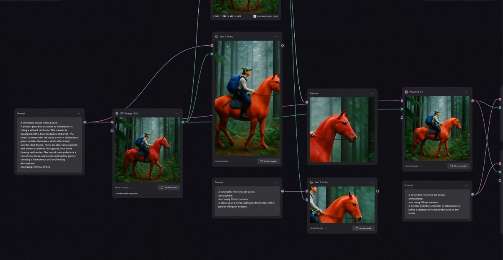

一、导语：AI 出图的问题，从来不是画得不好
10 月 31 日，Figma 发布《Connecting Figma and Weave》，宣布把 Weave 的节点式创作流程直接接到 Figma 画框上：一个 Figma 的 frame 可以变成 Weave 里的一个节点，改动在两边来回推送。同一天前后，Figma 还上线了两个配套动作——10 月 26 日把 Weave 里全部图像与视频模型（Seedance、Kling、Nano Banana 等）开放给 Figma MCP；10 月 30 日让 Organization 与 Enterprise 计划可以只在公司内部发布 Weave tools。
三件事拼起来才是完整的一步：AI 生成不再是一个输入框，而是一条能存下来、交给同事复跑的流水线。这恰好是过去两年生成式 AI 在真实生产环节里最尴尬的地方——图很好看，但第二次做同样的活，还得从头再来一遍。
二、背景分析：一次收购，一年时间，一个补丁
把时间拨回 2025 年 10 月 30 日，Figma 宣布收购以色列特拉维夫的创业公司 Weavy（成立于 2024 年），并把它改名为 Figma Weave。当时的说法很克制：Weavy 把 Seedance、Sora、Veo 这类视频模型，Flux、Ideogram 这类图像模型，和遮罩、调色、合成、upscale 这些专业编辑工具，放进了同一块节点画布，Figma 要把它并入自己的平台。
但并入之后的一整年，Weave 一直是「另一个网站」——weave.figma.com，一套独立账号，一套独立订阅。设计师在 Figma 里排版，在 Weave 里生成素材，再手动把图贴回来。这正是这次发布要修的那道缝。
为什么非修不可？因为 Figma 的核心叙事是「从想法到上线都在同一块画布上」，而 AI 时代最值钱的一环——视觉素材的生产——偏偏跑到了画布外面。Adobe 把 Firefly 塞进 Photoshop，Canva 把生成能力铺到模板层，ComfyUI 这类开源节点工具则吃掉了「进阶用户想要可控性」的那部分需求。Figma 若只做「设计协作」，就会被挤成品类里的排版工具。
三、核心内容：这次到底连上了什么
1. Figma node：一个画框，双向同步
Figma node 是 Weave 里的一种节点类型，作用是把 Figma Design 文件里的某一帧带进工作流。它保留原文件的字体、颜色、样式，所以生成结果天然「在品牌里」；你可以指定哪些图层允许被 AI 改动，其余原样不动。改完在 Weave 里点 Connect，可以把结果推回 Figma Design，也可以反向从 Figma 推回 Weave。原始文件不会被覆盖。
2. 分支与多模型对比：把「试错」变成可回看的记录
Weave 的每个节点是一步操作：喂图、写提示、生成、编辑。节点连起来是 workflow，从同一个起点分出两条路就是 branch。Figma 在官方博客里举的例子很日常：一张背包照片，接两个编辑节点，一个丢进森林、一个放上雪山，森林那张再调色，雪山那张转成短视频——两条分支都留在画布上，随时可以回去改。
同一段提示词还能同时喂给不同模型，把结果并排放着挑。这一点对实际工作流的影响比听起来大：过去选模型靠社群口碑，现在靠自己的素材在自家品牌语境下的对比结果。

3. 从 workflow 到 Weave tool：给不会用节点的人一个按钮
把一条 workflow 打包，就是一个 Weave tool：同事只需要上传素材、点 Generate，不必理解背后的节点和提示词。Figma 在帮助文档里给出了一方工具的固定计费，例如「给产品加 logo」19 credits/次、「专辑 mockup」21 credits/次、「应用配色方案」37 credits/次、Art Deco 风格 55 credits/次。社区发布已经开放，10 月 30 日起企业客户还能只在内网发布。
4. 价格：两套订阅，两个钱包
这是最容易被忽略、也最容易踩坑的部分。Figma 计划不含 Weave，Weave 有自己的价目表（月付 / 年付折算）：Free $0（150 credits，不给视频）、Starter $24/$17（1,500 credits）、Professional $45/$32（4,000 credits，官方标注约 18 分钟视频或 1 万张图）、Max $100/$70（1 万 credits，约 46 分钟视频或 2.5 万张图）、Team $60/$42 每人（4,500 credits/人，共享额度池）。额度可结转：Professional 与 Team 3 个月，Max 4 个月；充值 $10 换 1,000~1,200 credits。
而在 Figma Design 里跑一方 Weave tool，扣的是 Figma 的 AI credits（Professional 全席位 3,000/月、Organization 3,500/月、Enterprise 4,250/月，Starter 每天 150 上限 500）。两个池子互不相通——同一个团队很可能同时收到两张账单。
四、各方反应：设计师在意的是「能回来改」
Figma 博客里放了几段客户证言，角度出奇一致：不是「生成得多快」，而是「过程留得下来」。OutSystems 品牌团队的首席设计师 Bruno Figueiredo 用 Weave 做演示文稿和插画，调风格、调服装配色、调身体比例：
“I couldn't have reached this level of detail before. I can have seven flows running at the same time and come back when I'm ready to pick them up.”
布里斯托的品牌设计机构 Taxi Studio 用 Weave 工作流批量生成 3D 渲染图；建筑事务所 NBBJ 的首席信息官 Paul Audsley 则把期待放在了「设计文件与节点决策最终会在同一处」这件事上。Figma 社区里已经跑出使用量可观的公开工具，比如一款插画风格工具，页面上标着上千点赞、十几万次使用。
质疑同样明确，且集中在钱和锁。两套订阅意味着一个五人设计团队每月要多掏 $210 起步（Team 年付 $42×5）才能让每人有 4,500 credits，重视频的团队还要往上加。而 credits 这种计价方式，本质是把模型成本波动转嫁给用户：模型换一代，单位成本就变一次，预算很难做得准。
五、深度解读：工作流正在变成新的设计资产
把这次发布放进行业坐标里看，它回答了一个所有人都在摸索的问题：AI 创作工具的护城河，是模型还是流程？模型是租来的——Weave 里跑的是 Google、OpenAI、ByteDance、Runway、Black Forest Labs 的模型，Figma 一个都不拥有。既然如此，它唯一能锁住用户的就是流程层：节点怎么连、品牌约束怎么固化、谁能一键复跑。这套东西越用越沉，迁移成本也就越高。
这也解释了为什么 10 月 26 日要把 Weave 的模型接进 Figma MCP。当 Claude Code、Cursor 这类 agent 能直接调用 Weave 的图像与视频模型时，Weave 就从「一个网站」变成「一层能力」——agent 负责编排，Weave 负责渲染和记账。设计工具的角色，从画布变成调度台。
对国内团队的现实含义更直接：这套「节点 + 分支 + 打包成工具」的范式，和 ComfyUI 的社区实践高度重合，但 Figma 把它做成了订阅制产品，还配了权限、共享额度、内网发布这些企业功能。开源侧赢在自由度，商业侧赢在协作与合规，中间那批「不想配环境、又要交付品牌一致性」的团队，正是两边争抢的对象。
风险也很清楚。Weave 与 Figma 至今仍是两套账号、两套计费，产品体验上「打通了」，商业上还没打通——Figma 帮助文档里的原话是「暂未调整定价，仍在观察 Weave 该如何嵌入 Figma 的计划体系」。在整合完成之前，用户要为一个尚未合并的产品付两份钱，这会拦住一部分本来最想用它的中型团队。
六、总结
一句话：Figma 用一年时间把收购来的 Weave 从「另一个网站」拉回了画布，把 AI 生成从一次性的抽卡变成了可复用、可交付、可计价的流水线——19 credits 一次的工具、$42 一个人的团队席位、和一条能反复回改的节点链，才是它想卖的东西，而不是又一张好看的图。